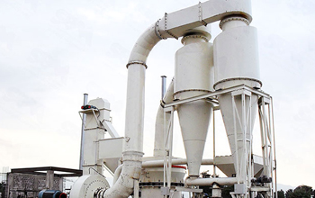

Vertical roller mill is a energy saving technologies equipment, for the added value of non-metallic mineral processing, the energy-efficient means to improve economic efficiency. Energy-efficient Vertical roller mill applications will help accelerate our non-metallic mineral products industry scale degree of precision, conducive to the formation of non-metallic mining companies with strong market competitiveness and achieve higher economic efficiency.
Vertical roller mill as an energy efficient equipment, and its technical characteristics are single production capacity, low energy consumption per unit of product, product narrow particle size distribution, good purity, good liquidity, vertical roller mill as a ultrafine grinding equipment, has been widely used white non-metallic mineral production and processing industries abroad, the current domestic large-scale non-metallic minerals also tend to use the equipment and technology process to produce TSP, barite, limestone and other non-metallic mineral products, as well as with ultra-fine grading equipment with deep-processing equipment, to produce refined products.
Industrial scale and degree of precision non-metallic ore products processing industry body has become the measure of a country's level of development of non-metallic mining industry an important symbol, and energy-efficient large-scale production and processing equipment and advanced technology to achieve non-metallic minerals key to the development of powder processing industry scale and industrial refinement. As one of the main equipment of non-metallic mineral powder dry ultra-fine processing technology, vertical roller mill technology in non-metallic mineral products industry scale and fine practical applications, highlighting the high efficiency, energy saving and environmental protection advantages, and to promote the non-metallic mineral industrial scale, product refinement development.
With a number of unique advantages, currently, LUM vertical roller mill machine has been widely utilization used in the major project, but also widely applied to road construction, water conservancy construction of dam, but also can be used for concrete bone material, not only effectively reduce the environmental pollution, but also to re-fly gives new economic value.
Live chat with our professional customer service! Get the quotation list.
Chat Now